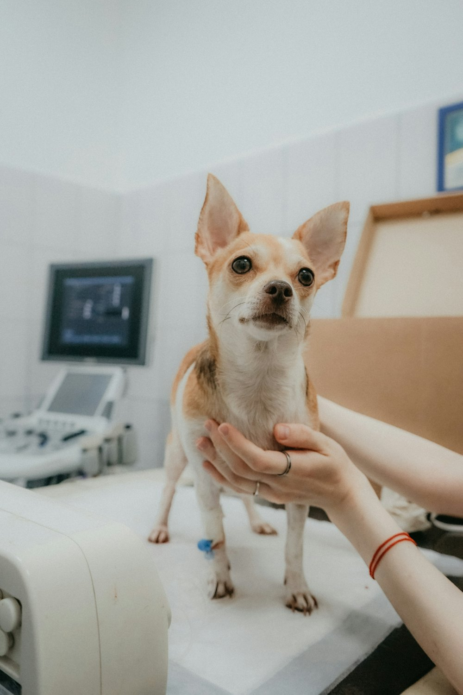
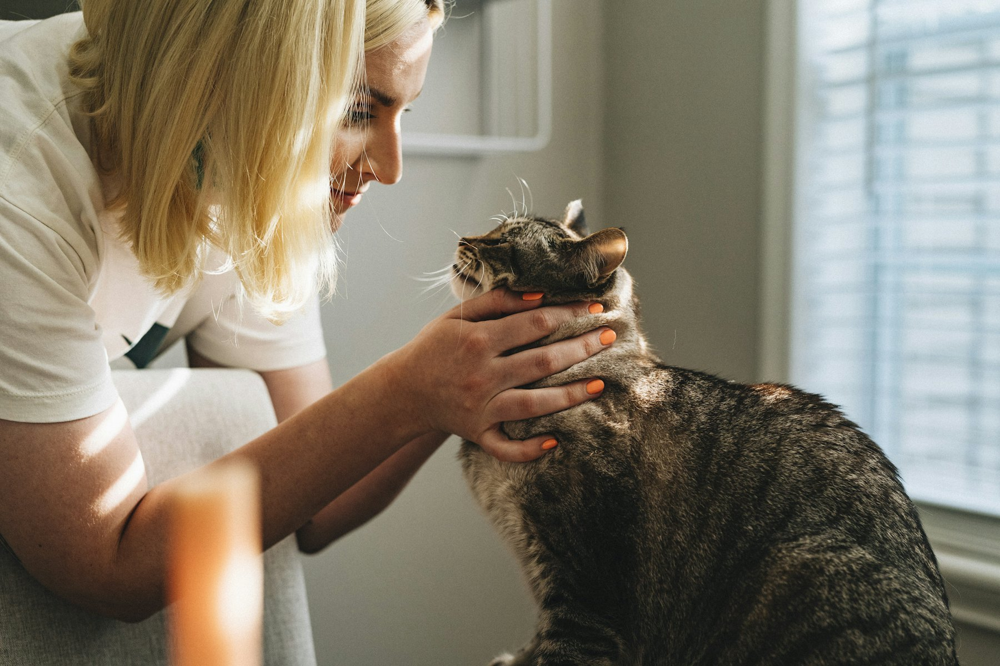
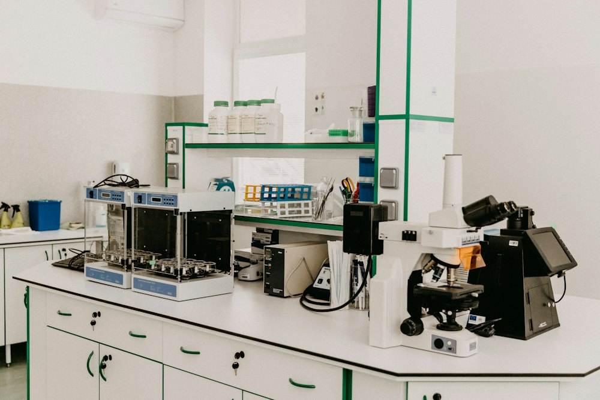
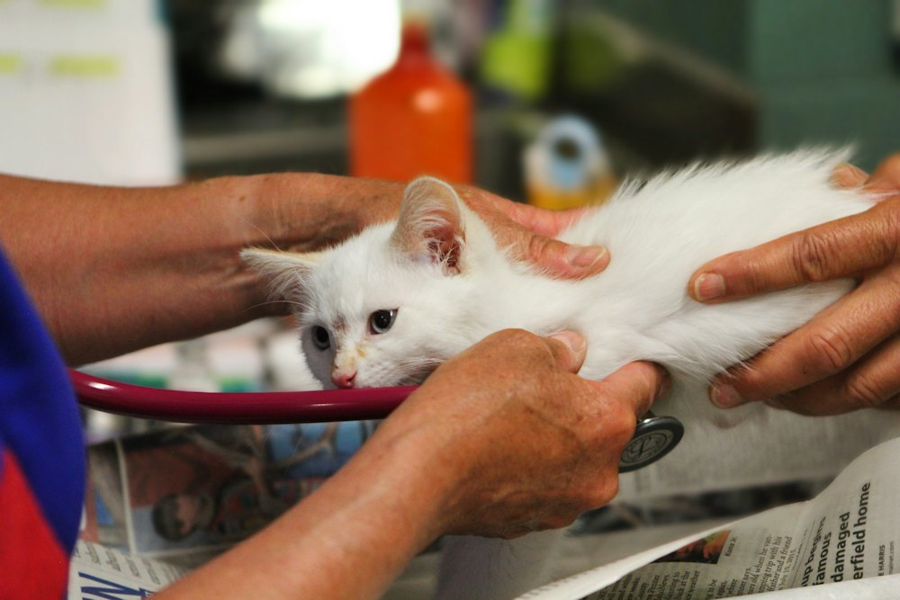
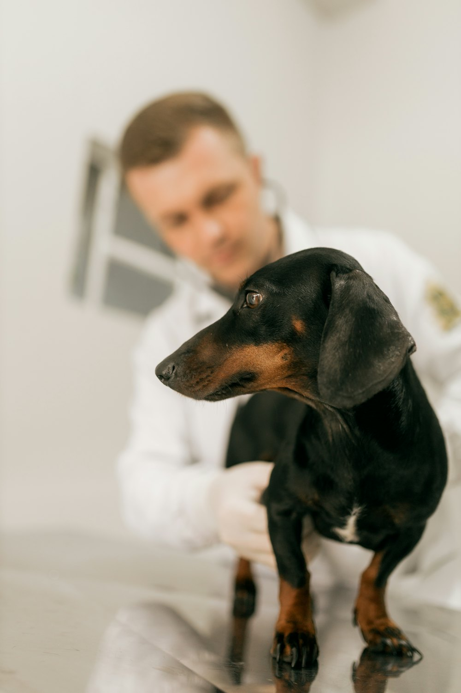
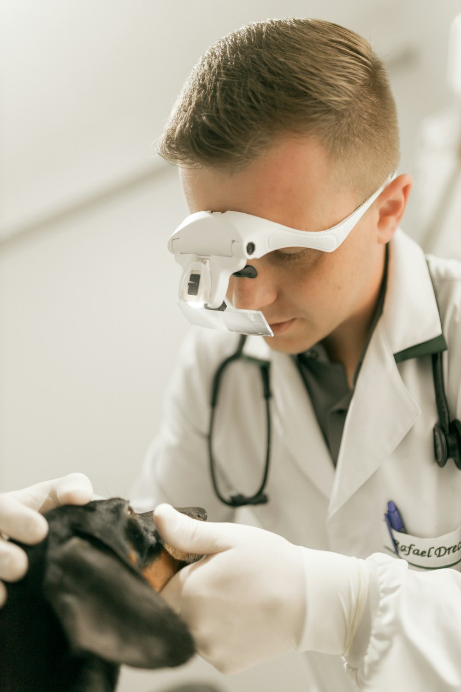
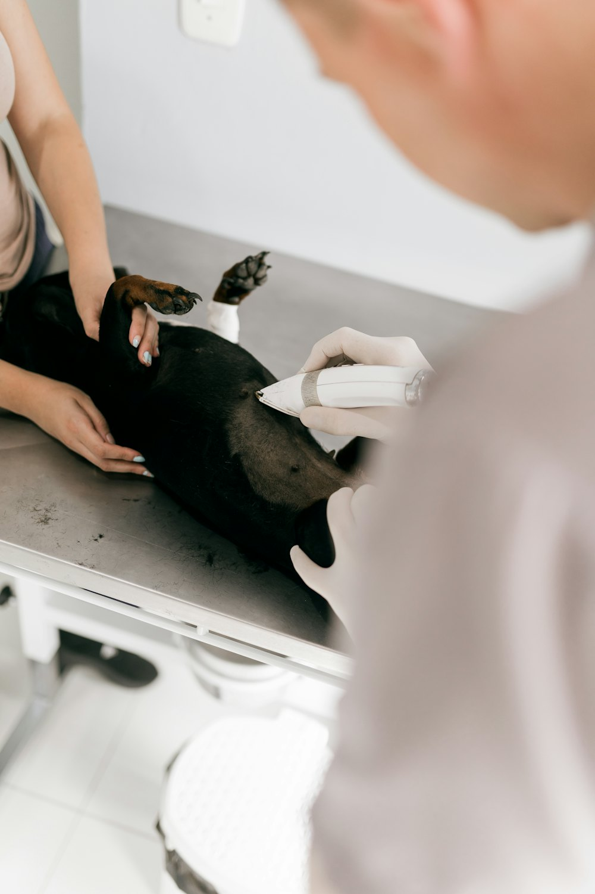
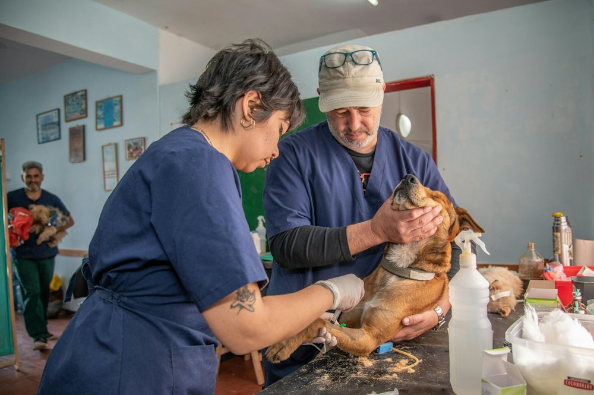

Vorsorge & Impfungen
Gesundheits-Checks, Impfpläne, Parasitenschutz und Ernährungsberatung.
Kleintiermedizin · Chirurgie · Notdienst
In der Tierklinik Blumengarten kümmert sich ein erfahrenes Team um Hunde, Katzen und Heimtiere – mit moderner Diagnostik, viel Ruhe und Zeit für Ihre Fragen.

Leistungen
Von der Vorsorge bis zur Operation: Wir begleiten Ihr Tier durch jede Lebensphase.

Gesundheits-Checks, Impfpläne, Parasitenschutz und Ernährungsberatung.
Weichteil- und Knochenchirurgie in zwei voll ausgestatteten OP-Sälen.

Hauseigenes Labor, digitales Röntgen, Ultraschall und Endoskopie.

Eigenes Wartezimmer für Katzen und stressarmes Handling.
Für Tierhalter
Buchen Sie Ihren Termin, registrieren Sie sich und senden Sie uns den Heimtierausweis – bequem von zu Hause.
Wählen Sie Anliegen, Tierärzt:in und Uhrzeit. Sie erhalten sofort eine Bestätigung und eine Erinnerung vor dem Termin.
Ihre Kontaktdaten und die Angaben zu Ihrem Tier liegen uns dann schon vor – an der Anmeldung geht es schneller.
Übermitteln Sie Chipnummer, Impfungen und Vorerkrankungen digital. So haben wir alle Daten griffbereit.

Für Tierärzt:innen
Sie möchten eine Patientin oder einen Patienten an uns überweisen? Füllen Sie die Online-Überweisung in wenigen Minuten aus. Befunde und Bilder können Sie direkt anhängen, wir melden uns mit der Rückmeldung bei Ihnen.
Team



Kontakt
089 000 000 00
demo@example.com
Notfall außerhalb der Sprechzeiten: Bitte rufen Sie vorher an, damit wir uns vorbereiten können.